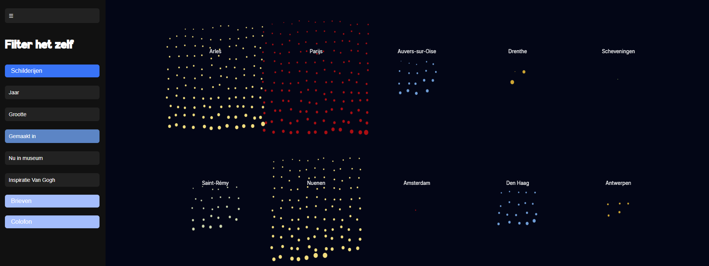
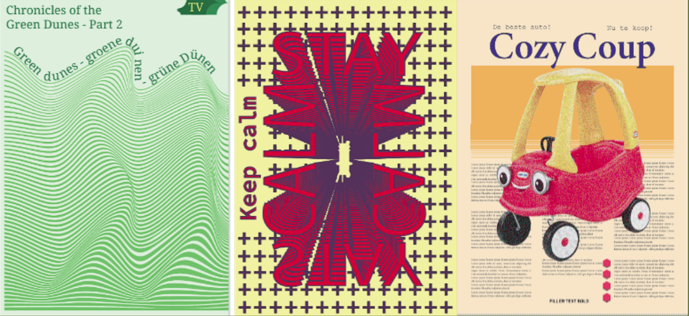
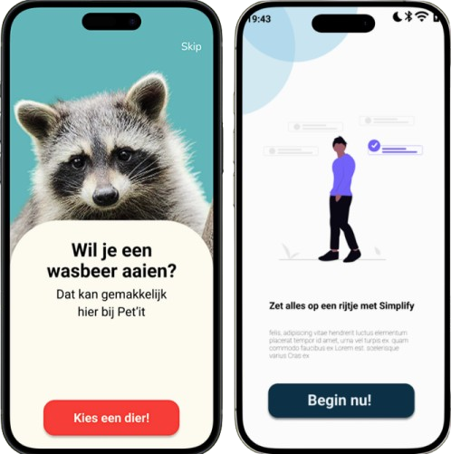

Free The Map
Tijdens dit project moest ik Nederland visualiseren zonder de traditionele kaartgrenzen. Met data, vormen en kleur heb ik gezocht naar een nieuwe manier om het land te laten zien.
Zie mijn project →UX/UI Designer
Ik ontwerp UX/UI designs gericht op gebruikerservaring en maak mijn eigen designs voor prototypes.
Een selectie van mijn recente UX projecten onderzoek, flows, interfaces en databases

Tijdens dit project moest ik Nederland visualiseren zonder de traditionele kaartgrenzen. Met data, vormen en kleur heb ik gezocht naar een nieuwe manier om het land te laten zien.
Zie mijn project →
Met dit project heb ik verschillende posters ontworpen met Illustrator. De focus lag op het uitbreiden van mijn Illustrator vaardigheden en experimenteren met compositie, kleur en typografie.
Zie mijn project →
Hier zijn een aantal van mijn UX projecten
Zie mijn project →Ik ben een UX/UI designer gefocust op het maken van gebruiksvriendelijke designs die gebruikers helpen om hun doelen te bereiken. Verder ben ik ook erg geïnteresseerd in data en kan ik goed omgaan met databases
Ik ben een erg creatief, sociaal en leergierig persoon. Ik heb een passie voor bakken en vind het leuk om buiten mijn school ook creatief bezig te zijn met tekenen en schilderen. Verder vind ik gamen en films ook erg belangrijk.
Ik kijk er naar uit om met je in contact te komen!